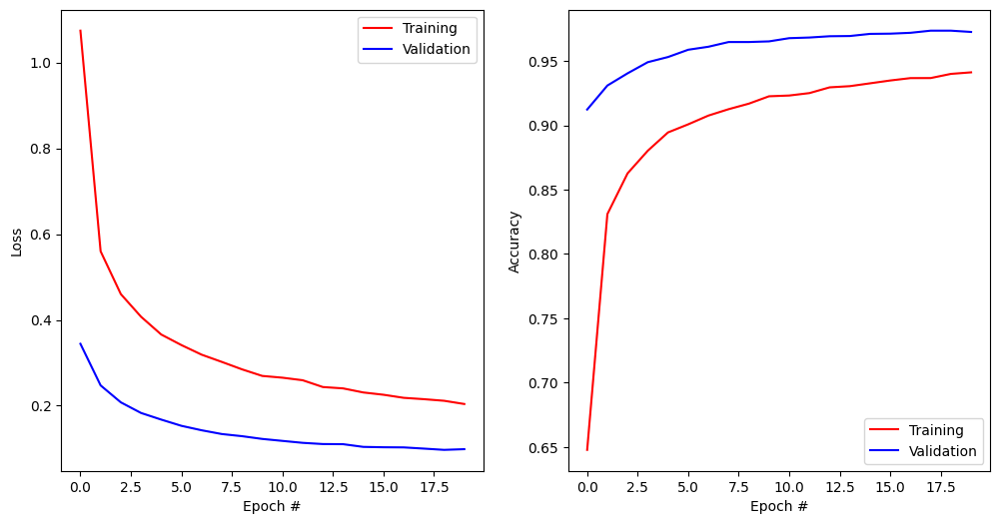

#!pip install ANNarchyANN-to-SNN conversion - MLP


This notebook demonstrates how to transform a fully-connected neural network trained using tensorflow/keras into an SNN network usable in ANNarchy.
The methods are adapted from the original models used in:
Diehl et al. (2015) “Fast-classifying, high-accuracy spiking deep networks through weight and threshold balancing” Proceedings of IJCNN. doi: 10.1109/IJCNN.2015.7280696
import numpy as np
import matplotlib.pyplot as plt
import tensorflow as tf
print(f"Tensorflow {tf.__version__}")Tensorflow 2.16.2First we need to download and process the MNIST dataset provided by tensorflow.
# Download data
(X_train, t_train), (X_test, t_test) = tf.keras.datasets.mnist.load_data()
# Normalize inputs
X_train = X_train.reshape(X_train.shape[0], 784).astype('float32') / 255.
X_test = X_test.reshape(X_test.shape[0], 784).astype('float32') / 255.
# One-hot output vectors
T_train = tf.keras.utils.to_categorical(t_train, 10)
T_test = tf.keras.utils.to_categorical(t_test, 10)Training an ANN in tensorflow/keras
The tensorflow.keras network is build using the functional API.
The fully-connected network has two fully connected layers with ReLU, no bias, dropout at 0.5, and a softmax output layer with 10 neurons. We use the standard SGD optimizer and the categorical crossentropy loss for classification.
def create_mlp():
# Model
inputs = tf.keras.layers.Input(shape=(784,))
x= tf.keras.layers.Dense(128, use_bias=False, activation='relu')(inputs)
x = tf.keras.layers.Dropout(0.5)(x)
x= tf.keras.layers.Dense(128, use_bias=False, activation='relu')(x)
x = tf.keras.layers.Dropout(0.5)(x)
x=tf.keras.layers.Dense(10, use_bias=False, activation='softmax')(x)
model= tf.keras.Model(inputs, x)
# Optimizer
optimizer = tf.keras.optimizers.SGD(learning_rate=0.05)
# Loss function
model.compile(
loss='categorical_crossentropy', # loss function
optimizer=optimizer, # learning rule
metrics=['accuracy'] # show accuracy
)
print(model.summary())
return modelWe can now train the network and save the weights in the HDF5 format.
# Create model
model = create_mlp()
# Train model
history = model.fit(
X_train, T_train, # training data
batch_size=128, # batch size
epochs=20, # Maximum number of epochs
validation_split=0.1, # Percentage of training data used for validation
)
model.save("runs/mlp.keras")
# Test model
predictions_keras = model.predict(X_test, verbose=0)
test_loss, test_accuracy = model.evaluate(X_test, T_test, verbose=0)
print(f"Test accuracy: {test_accuracy}")Model: "functional"
┏━━━━━━━━━━━━━━━━━━━━━━━━━━━━━━━━━┳━━━━━━━━━━━━━━━━━━━━━━━━┳━━━━━━━━━━━━━━━┓ ┃ Layer (type) ┃ Output Shape ┃ Param # ┃ ┡━━━━━━━━━━━━━━━━━━━━━━━━━━━━━━━━━╇━━━━━━━━━━━━━━━━━━━━━━━━╇━━━━━━━━━━━━━━━┩ │ input_layer (InputLayer) │ (None, 784) │ 0 │ ├─────────────────────────────────┼────────────────────────┼───────────────┤ │ dense (Dense) │ (None, 128) │ 100,352 │ ├─────────────────────────────────┼────────────────────────┼───────────────┤ │ dropout (Dropout) │ (None, 128) │ 0 │ ├─────────────────────────────────┼────────────────────────┼───────────────┤ │ dense_1 (Dense) │ (None, 128) │ 16,384 │ ├─────────────────────────────────┼────────────────────────┼───────────────┤ │ dropout_1 (Dropout) │ (None, 128) │ 0 │ ├─────────────────────────────────┼────────────────────────┼───────────────┤ │ dense_2 (Dense) │ (None, 10) │ 1,280 │ └─────────────────────────────────┴────────────────────────┴───────────────┘
Total params: 118,016 (461.00 KB)
Trainable params: 118,016 (461.00 KB)
Non-trainable params: 0 (0.00 B)
None
Epoch 1/20
422/422 ━━━━━━━━━━━━━━━━━━━━ 1s 2ms/step - accuracy: 0.4837 - loss: 1.5160 - val_accuracy: 0.9123 - val_loss: 0.3443
Epoch 2/20
422/422 ━━━━━━━━━━━━━━━━━━━━ 1s 1ms/step - accuracy: 0.8178 - loss: 0.5996 - val_accuracy: 0.9310 - val_loss: 0.2473
Epoch 3/20
422/422 ━━━━━━━━━━━━━━━━━━━━ 1s 1ms/step - accuracy: 0.8566 - loss: 0.4747 - val_accuracy: 0.9405 - val_loss: 0.2079
Epoch 4/20
422/422 ━━━━━━━━━━━━━━━━━━━━ 1s 1ms/step - accuracy: 0.8771 - loss: 0.4162 - val_accuracy: 0.9492 - val_loss: 0.1831
Epoch 5/20
422/422 ━━━━━━━━━━━━━━━━━━━━ 1s 1ms/step - accuracy: 0.8934 - loss: 0.3715 - val_accuracy: 0.9532 - val_loss: 0.1676
Epoch 6/20
422/422 ━━━━━━━━━━━━━━━━━━━━ 1s 1ms/step - accuracy: 0.8999 - loss: 0.3453 - val_accuracy: 0.9588 - val_loss: 0.1531
Epoch 7/20
422/422 ━━━━━━━━━━━━━━━━━━━━ 1s 2ms/step - accuracy: 0.9066 - loss: 0.3198 - val_accuracy: 0.9612 - val_loss: 0.1427
Epoch 8/20
422/422 ━━━━━━━━━━━━━━━━━━━━ 1s 1ms/step - accuracy: 0.9113 - loss: 0.3056 - val_accuracy: 0.9648 - val_loss: 0.1340
Epoch 9/20
422/422 ━━━━━━━━━━━━━━━━━━━━ 1s 1ms/step - accuracy: 0.9183 - loss: 0.2816 - val_accuracy: 0.9648 - val_loss: 0.1290
Epoch 10/20
422/422 ━━━━━━━━━━━━━━━━━━━━ 1s 1ms/step - accuracy: 0.9229 - loss: 0.2682 - val_accuracy: 0.9653 - val_loss: 0.1226
Epoch 11/20
422/422 ━━━━━━━━━━━━━━━━━━━━ 1s 1ms/step - accuracy: 0.9225 - loss: 0.2673 - val_accuracy: 0.9678 - val_loss: 0.1180
Epoch 12/20
422/422 ━━━━━━━━━━━━━━━━━━━━ 1s 1ms/step - accuracy: 0.9239 - loss: 0.2624 - val_accuracy: 0.9683 - val_loss: 0.1135
Epoch 13/20
422/422 ━━━━━━━━━━━━━━━━━━━━ 1s 1ms/step - accuracy: 0.9272 - loss: 0.2503 - val_accuracy: 0.9693 - val_loss: 0.1106
Epoch 14/20
422/422 ━━━━━━━━━━━━━━━━━━━━ 1s 1ms/step - accuracy: 0.9281 - loss: 0.2475 - val_accuracy: 0.9695 - val_loss: 0.1103
Epoch 15/20
422/422 ━━━━━━━━━━━━━━━━━━━━ 1s 1ms/step - accuracy: 0.9319 - loss: 0.2331 - val_accuracy: 0.9712 - val_loss: 0.1040
Epoch 16/20
422/422 ━━━━━━━━━━━━━━━━━━━━ 1s 1ms/step - accuracy: 0.9368 - loss: 0.2208 - val_accuracy: 0.9713 - val_loss: 0.1031
Epoch 17/20
422/422 ━━━━━━━━━━━━━━━━━━━━ 1s 1ms/step - accuracy: 0.9369 - loss: 0.2183 - val_accuracy: 0.9720 - val_loss: 0.1028
Epoch 18/20
422/422 ━━━━━━━━━━━━━━━━━━━━ 1s 1ms/step - accuracy: 0.9352 - loss: 0.2153 - val_accuracy: 0.9737 - val_loss: 0.1000
Epoch 19/20
422/422 ━━━━━━━━━━━━━━━━━━━━ 1s 1ms/step - accuracy: 0.9426 - loss: 0.2030 - val_accuracy: 0.9737 - val_loss: 0.0971
Epoch 20/20
422/422 ━━━━━━━━━━━━━━━━━━━━ 1s 1ms/step - accuracy: 0.9430 - loss: 0.2052 - val_accuracy: 0.9727 - val_loss: 0.0987
Test accuracy: 0.9652000069618225plt.figure(figsize=(12, 6))
plt.subplot(121)
plt.plot(history.history['loss'], '-r', label="Training")
plt.plot(history.history['val_loss'], '-b', label="Validation")
plt.xlabel('Epoch #')
plt.ylabel('Loss')
plt.legend()
plt.subplot(122)
plt.plot(history.history['accuracy'], '-r', label="Training")
plt.plot(history.history['val_accuracy'], '-b', label="Validation")
plt.xlabel('Epoch #')
plt.ylabel('Accuracy')
plt.legend()
plt.show()
Initialize the ANN-to-SNN converter
We first create an instance of the ANN-to-SNN conversion object. The function receives the input_encoding parameter, which is the type of input encoding we want to use.
By default, there are intrinsically bursting (IB), phase shift oscillation (PSO) and Poisson (poisson) available.
from ANNarchy.extensions.ann_to_snn_conversion import ANNtoSNNConverter
snn_converter = ANNtoSNNConverter(
input_encoding='IB',
hidden_neuron='IaF',
read_out='spike_count',
)ANNarchy 4.8 (4.8.3) on darwin (posix).After that, we provide the TensorFlow model stored as a .keras file to the conversion tool. The print-out of the network structure of the imported network is suppressed when show_info=False is provided to load_keras_model.
net = snn_converter.load_keras_model("runs/mlp.keras", show_info=True)WARNING: Dense representation is an experimental feature for spiking models, we greatly appreciate bug reports.
* Input layer: input_layer, (784,)
* InputLayer skipped.
* Dense layer: dense, 128
weights: (128, 784)
mean -0.0038075943011790514, std 0.05276760458946228
min -0.32009223103523254, max 0.24077153205871582
* Dropout skipped.
* Dense layer: dense_1, 128
weights: (128, 128)
mean 0.0048642707988619804, std 0.10200534760951996
min -0.2624298334121704, max 0.4079423248767853
* Dropout skipped.
* Dense layer: dense_2, 10
weights: (10, 128)
mean -0.0005833255127072334, std 0.21552757918834686
min -0.5742316246032715, max 0.4535660445690155
When the network has been built successfully, we can perform a test using all MNIST training samples. Using duration_per_sample, the duration simulated for each image can be specified. Here, 200 ms seem to be enough.
predictions_snn = snn_converter.predict(X_test, duration_per_sample=200) 0%| | 0/10000 [00:00<?, ?it/s]100%|██████████| 10000/10000 [00:54<00:00, 182.00it/s]Using the recorded predictions, we can now compute the accuracy using scikit-learn for all presented samples.
from sklearn.metrics import classification_report, accuracy_score
print(classification_report(t_test, predictions_snn))
print("Test accuracy of the SNN:", accuracy_score(t_test, predictions_snn)) precision recall f1-score support
0 0.97 0.99 0.98 980
1 0.98 0.98 0.98 1135
2 0.96 0.97 0.96 1032
3 0.94 0.97 0.95 1010
4 0.97 0.95 0.96 982
5 0.97 0.94 0.95 892
6 0.96 0.97 0.97 958
7 0.96 0.96 0.96 1028
8 0.96 0.94 0.95 974
9 0.96 0.95 0.95 1009
accuracy 0.96 10000
macro avg 0.96 0.96 0.96 10000
weighted avg 0.96 0.96 0.96 10000
Test accuracy of the SNN: 0.9623For comparison, here is the performance of the original ANN in keras:
print(classification_report(t_test, predictions_keras.argmax(axis=1)))
print("Test accuracy of the ANN:", accuracy_score(t_test, predictions_keras.argmax(axis=1))) precision recall f1-score support
0 0.97 0.98 0.98 980
1 0.98 0.99 0.98 1135
2 0.96 0.97 0.96 1032
3 0.94 0.97 0.96 1010
4 0.96 0.96 0.96 982
5 0.97 0.95 0.96 892
6 0.96 0.97 0.97 958
7 0.97 0.97 0.97 1028
8 0.97 0.94 0.96 974
9 0.97 0.94 0.96 1009
accuracy 0.97 10000
macro avg 0.97 0.96 0.96 10000
weighted avg 0.97 0.97 0.97 10000
Test accuracy of the ANN: 0.9652